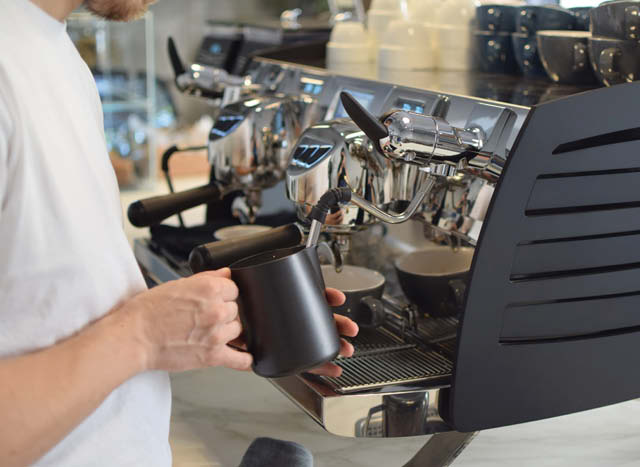

Maquinas de Vapor
Mas Informacion
Las máquinas de café de vapor son un tipo de máquina de café que utilizan vapor para hacer espuma de leche y preparar bebidas como lattes y cappuccinos. Estas máquinas funcionan calentando agua hasta que se convierte en vapor, que luego se utiliza para crear presión y pasar a través del café molido para hacer espresso. También se utiliza vapor para calentar y espumar la leche para crear la espuma que se encuentra en las bebidas de café con leche. Las máquinas de café de vapor son populares en muchos hogares y establecimientos comerciales debido a su facilidad de uso y a la capacidad de hacer una variedad de bebidas de café.